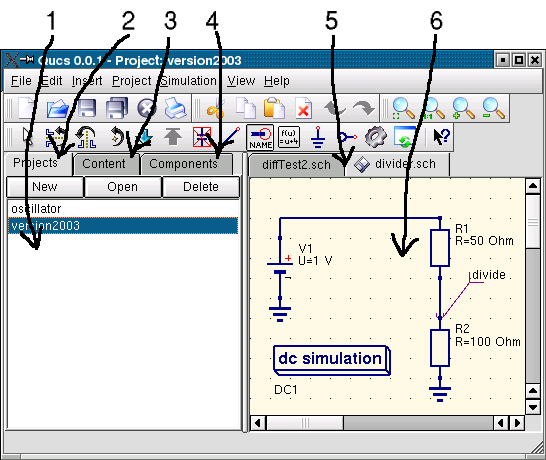

- Qucs -
Simulador de Circuitos Completamente Universal
Começando com
Simulações Analógicas
Qucs (fala-se: kju:ks) é um simulador de circuitos com interface gráfica. Ele é capaz de
executar muitos tipos diferentes de simulações (ex. DC, Parâmetro S).
Este documento deve dar uma pequena descrição de como usar o Qucs.
Quando você começar o Qucs pela primeira vez, ele criará o diretório ".qucs" no diretório home do
usuário. Cada arquivo será salvo dentro deste diretório ou dentro de um de seus subdiretórios.
Após o Qucs ser carregado, você verá uma janela principal semelhante a janela vista na figura 1.
No lado direito, fica a área de trabalho (6) contendo o esquema elétrico,
exibição de dados e assim por diante. Usando a barra tabular (5) acima desta área, você pode rapidamente
trocar para qualquer documento aberto. No lado esquerdo da janela principal do Qucs, há
outra área (1), de quem o conteúdo depende do estado de sua barra tabular logo acima:
"Projetos" (2), "Conteúdo" (3) e "Componentes" (4). Após iniciar o Qucs, a aba "Projetos"
(2) fica ativa. Por ser a primeira vez que você começa este programa, a área está vazia
porque você não tem nenhum projeto. Pressione o botão "Novo" localizado acima da área (1) e
uma janela abrirá. Entre com um nome para o seu primeiro projeto, ex. "primeiroProjeto" e pressione
o botão "Ok". Qucs criará um diretório de projeto dentro do diretório ~/.qucs, para este exemplo,
"primeiroProjeto_prj". Cada arquivo que pertença a este novo projeto será salvo dentro deste
diretório. O novo projeto é imediatamente aberto (como pode ser lido na barra de título da janela)
e a barra de abas mudada para "Conteúdo" (3), onde o conteúdo do projeto atualmente
aberto é mostrado. Você ainda não tem nenhum documento, assim, pressione o botão salvar na barra de
ferramentas (ou use o menu principal: Arquivo->Salvar) para salvar o documento sem título
que preenche a área de trabalho (6). Você será perguntado pelo nome do seu novo documento.
Digite "primeiroEsquema" e pressione o botão "Ok".

Figura 1 - Janela principal do Qucs
Agora, nós queremos fazer uma simples simulação DC, ex. nós queremos analisar o circuito da figura
(1). Ative a aba "Componentes" ( (4) na figura 1). Lá, você verá uma caixa de seleção onde
você pode escolher um grupo de componentes, abaixo, os componentes que podem ser escolhidos do grupo.
Escolha "componentes soltos" e clique no primeiro símbolo: "Resistor". Movendo o cursor do mouse
dentro da área de trabalho (6), você carregará um desenho do símbolo de um resistor. Pressionando o botão direito
do mouse, o símbolo girará, pressionando o botão esquerdo do mouse colocará o componente no
esquema elétrico. Repita este processo para todos os componentes mostrados na figura 1. A fonte de tensão
pode ser encontrada na classe de componentes "fontes", o símbolo terra pode ser pego na classe "componentes
soltos" ou da barra de ferramentas, o tipo de simulação é definida pelos grandes blocos de simulação
encontrados na classe de componentes "simulações". Para editar os parâmetros do segundo resistor,
clique duas vezes sobre ele com o botão esquerdo. Uma caixa de diálogo abrirá, onde você pode mudar a
resistência. Digite "100 Ohm" no campo de edição no lado direito e pressione enter.
Para conectar os componentes, pressione o botão "fio" da barra de ferramentas (ou use o menu principal: Inserir->Fio).
Mova o cursor do mouse até uma porta aberta (marcado por pequenos círculos vermelhos). Clicando nela, começa
o fio. Agora mova até o ponto final e clique novamente. Os componentes estão agora conectados. Se você quiser
mudar a direção do canto do fio, clique com o botão direito do mouse antes de
clicar no ponto final. Você também pode terminar um fio sem clicar sobre uma porta aberta ou sobre um fio:
Apenas faça um duplo-clique com o botão esquerdo do mouse.
Por último mas não menos importante, você deve rotular o nó onde queira que o Qucs calcule a tensão.
Pressione o botão rótulo na barra de ferramentas (ou use o menu: Inserir->Rótulo de Fio). Agora clique no
fio escolhido. Uma janela de diálogo abrirá e você pode digitar o nome do nó. Digite "divisor" e clique no botão "Ok".
Agora o circuito deve se parecer com o visto na figura 1.
Para iniciar a simulação pressione o botão simular na barra de ferramentas (ou use o menu:
Simulação->Simular). Uma janela abrirá e exibirá o progresso da simulação. Após finalizar a simulação com
sucesso, a exibição de dados é aberta. Normalmente, tudo isso acontece tão rapidamente que você verá
somente uma curta piscada. Agora você tem que colocar um diagrama para ver os resultados da simulação. No lado esquerdo,
a classe de componentes "diagramas" já foi escolhida automaticamente. Clique no ítem
"Tabela", mova o mouse até a área de trabalho e colóque-o clicando com o botão esquerdo do mouse.
Uma janela de diálogo abrirá e você poderá escolher o que será exibido no novo diagrama. Na área esquerda
você verá o nome do nó que você definiu: "divisor". Clique duas vezes e ele será transferido
para a área da direita. Feche a janela clicando no botão "Ok". Agora você pode ver o resultado
da simulação: 0.666667 volts. Maravilhoso, dê um tapinha em suas costas!
voltar ao topo